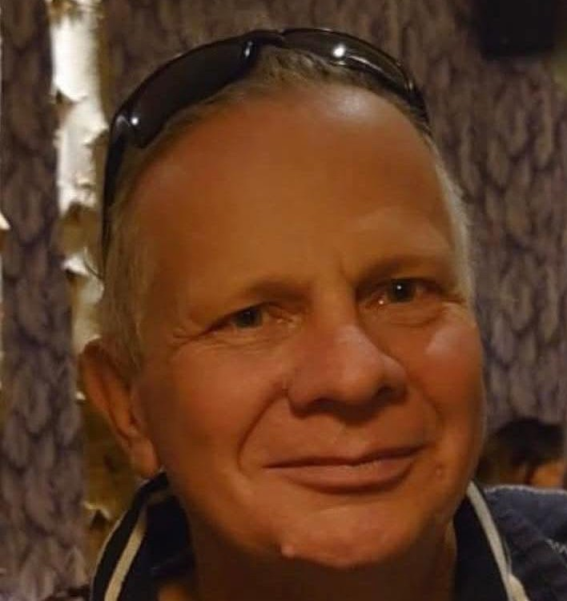
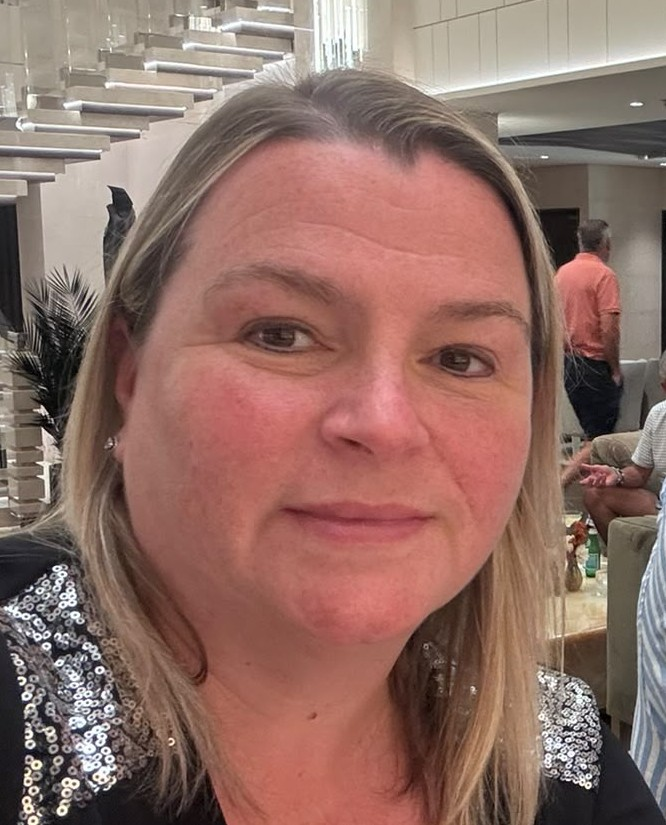

<section id="about-and-team" class="section py-5">
  <div class="container text-black">

    <!-- 1. UNIFIED RESPONSIVE HEADER -->
    <header class="bg-transparent py-4 py-md-5 mt-md-2 w-100 px-3 text-center mb-4">
      <div class="mx-auto d-inline-block pb-2 pb-md-3 border-bottom border-4 border-dark max-w-100">
        <h1 class="display-4 display-md-2 fw-bold mb-0 text-uppercase text-black lh-sm tracking-wider">
          CLUB INFORMATION
        </h1>
      </div>
    </header>

    <!-- 2. MAIN 2-COLUMN SPLIT (About vs Team) -->
    <div class="row g-5 text-start">
      
      <!-- LEFT-HAND COLUMN: ABOUT US & MISSION CARDS (50% Width) -->
      <div class="col-12 col-lg-6 d-flex flex-column gap-4">
        <div class="pb-2 border-bottom border-2 border-dark mb-2">
          <h2 class="h3 fw-bold text-uppercase tracking-wide mb-0 text-black">About Us</h2>
        </div>

        <!-- Block 1: Who We Are -->
        <div class="p-4 border border-dark border-2 rounded-3 text-start" style="background-color: #fef9e7;">
          <h3 class="fw-bold mb-3 text-uppercase fs-5">Who We Are</h3>
          <p class="mb-2"><strong>Our Mission:</strong> To grow the game of pickleball across Gloucestershire.</p>
          <p class="mb-2"><strong>Our Community:</strong> Players of all ages, from total beginners to match-ready competitors.</p>
          <p class="mb-0"><strong>Our Vibe:</strong> Inclusive, social, active, and welcoming.</p>
        </div>
        
        <!-- Block 2: What We Do -->
        <div class="p-4 border border-dark border-2 rounded-3 text-start" style="background-color: #fef9e7;">
          <h3 class="fw-bold mb-3 text-uppercase fs-5">What We Do</h3>
          <p class="mb-2"><strong>Social Play:</strong> Weekly club sessions for casual rallies and fun matches.</p>
          <p class="mb-2"><strong>Coaching:</strong> Beginner-friendly "Intro to Pickleball" and clinics.</p>
          <p class="mb-0"><strong>Local Leagues:</strong> Competitive matches at <a href="https://www.google.com/maps/place/Oxstalls+Sports+Park/@51.8784639,-2.2373333,17z/data=!3m1!4b1!4m6!3m5!1s0x4871042a2444147f:0xae0bae45b9ed1912!8m2!3d51.8784639!4d-2.234753!16s%2Fg%2F12330zrny?entry=ttu&g_ep=EgoyMDI2MDgxOS4wIKXMDSoASAFQAw%3D%3D" target="_blank" rel="noopener" class="text-decoration-underline fw-semibold text-dark">Oxstalls Sports Park</a>.</p>
        </div>
        
        <!-- Block 3: Why Play With Us? -->
        <div class="p-4 border border-dark border-2 rounded-3 text-start" style="background-color: #fef9e7;">
          <h3 class="fw-bold mb-3 text-uppercase fs-5">Why Play With Us?</h3>
          <p class="mb-2"><strong>Easy to Learn:</strong> Simple rules mean you can start playing on day one.</p>
          <p class="mb-2"><strong>Good for Health:</strong> A fantastic, low-impact workout gentle on joints.</p>
          <p class="mb-0"><strong>Great Friends:</strong> Meet local people who share a passion for sport.</p>
        </div>
      </div>

      <!-- RIGHT-HAND COLUMN: MEET THE TEAM COMPACT BIOS (50% Width) -->
      <div class="col-12 col-lg-6 d-flex flex-column gap-4">
        <div class="pb-2 border-bottom border-2 border-dark mb-2">
          <h2 class="h3 fw-bold text-uppercase tracking-wide mb-0 text-black">Meet The Team</h2>
        </div>

        <!-- Team Member 1: Ian Walkley -->
        <div class="card border border-dark border-2 p-3 bg-white rounded-3">
          <div class="row g-3 align-items-start">
            <div class="col-4 col-sm-3 mx-auto">
              <div class="ratio ratio-1x1">
                
              </div>
            </div>
            <div class="col-12 col-sm-9 text-start">
              <h4 class="fw-bold h5 mb-0 text-dark">Ian Walkley</h4>
              <span class="text-muted small fst-italic mb-2 d-block">Chairman & Head Coach</span>
              <p class="text-danger small fw-bold mb-1">Mad about Pickleball!</p>
              <p class="small text-secondary mb-0" style="font-size: 0.85rem; line-height: 1.4;">
                Born and bred in Gloucestershire, I was introduced to pickleball by friends in October 2023. 
                I started playing at Bristol Pickleball Club and quickly joined Thornbury, Swindon and Gloucester pickleball clubs 
                so that I could play as much as possible. I completed my pickleball instructor’s course on 7 December 2024, 
                which helped me run a few starter sessions at Stroud Leisure Centre. 
                That experience gave me the confidence to take on the role of County Representative for Pickleball England 
                in February 2025, with responsibility for helping to develop the game across Gloucestershire. 
                Since then, I have qualified as a Level 1 coach, run a couple of tournaments, started the 
                Gloucestershire Pickleball League, and become Chairman of Pickleball Gloucestershire — a great honour. 
                I could not have done any of this without the support of my family and the Pickleball Gloucestershire team. 
                Thank you all for your help.
              </p>
            </div>
          </div>
        </div>

        <!-- Team Member 2: Rachael Merrett -->
        <div class="card border border-dark border-2 p-3 bg-white rounded-3">
          <div class="row g-3 align-items-center">
            <div class="col-4 col-sm-3 mx-auto">
              <div class="ratio ratio-1x1">
                
              </div>
            </div>
            <div class="col-12 col-sm-9 text-start">
              <h4 class="fw-bold h5 mb-0 text-dark">Rachael Merrett</h4>
              <span class="text-muted small fst-italic mb-1 d-block">Club Treasurer</span>
              <p class="small text-secondary mb-0" style="font-size: 0.85rem;">
                Rachael Merrett, Financial Director for YETI Europe, been playing pickle since Dec 2023. </p>
              <p class="small text-secondary mb-0" style="font-size: 0.85rem;">
                Founding member of Gloster Bombers club. 
                Huge Gloucester Rugby fan. Married to coach Snoz Merrett
              </p>
            </div>
          </div>
        </div>

        <!-- Team Member 3: Jen Walkley -->
        <div class="card border border-dark border-2 p-3 bg-white rounded-3">
          <div class="row g-3 align-items-center">
            <div class="col-4 col-sm-3 mx-auto">
              <div class="ratio ratio-1x1">
                
              </div>
            </div>
            <div class="col-12 col-sm-9 text-start">
              <h4 class="fw-bold h5 mb-0 text-dark">Jen Walkley</h4>
              <span class="text-muted small fst-italic mb-1 d-block">Club Secretary & Tournament Coordinator</span>
              <p class="small text-secondary mb-0" style="font-size: 0.85rem;">
                Everything Else!!!
              </p>
            </div>
          </div>
        </div>

        <!-- Team Member 4: James Hemming -->
        <div class="card border border-dark border-2 p-3 bg-white rounded-3">
          <div class="row g-3 align-items-center">
            <div class="col-4 col-sm-3 mx-auto">
              <div class="ratio ratio-1x1">
                
              </div>
            </div>
            <div class="col-12 col-sm-9 text-start">
              <h4 class="fw-bold h5 mb-0 text-dark">James Hemming</h4>
              <span class="text-muted small fst-italic mb-1 d-block">tba</span>
              <p class="small text-secondary mb-0" style="font-size: 0.85rem;">
                I've played pickleball for around 2½ years at David Lloyd Gloucester, where I set up The Bombers.</p>
              <P class="small text-secondary mb-0" style="font-size: 0.85rem;">
                I've competed at the English Open and Nationals in recent years and have been part of the Gloucestershire Pickleball Committee for over a year, helping support and develop the sport locally.
              </p>
            </div>
          </div>
        </div>    
        
                <!-- Team Member 5: Jo Button -->
        <div class="card border border-dark border-2 p-3 bg-white rounded-3">
          <div class="row g-3 align-items-center">
            <div class="col-4 col-sm-3 mx-auto">
              <div class="ratio ratio-1x1">
                
              </div>
            </div>
            <div class="col-12 col-sm-9 text-start">
              <h4 class="fw-bold h5 mb-0 text-dark">Jo Button</h4>
              <span class="text-muted small fst-italic mb-1 d-block">tba</span>
              <p class="small text-secondary mb-0" style="font-size: 0.85rem;">
                tba
              </p>
            </div>
          </div>
        </div>   

      </div> <!-- Closes Right Column -->

    </div> <!-- Closes Row -->
  </div> <!-- Closes Container -->
</section>